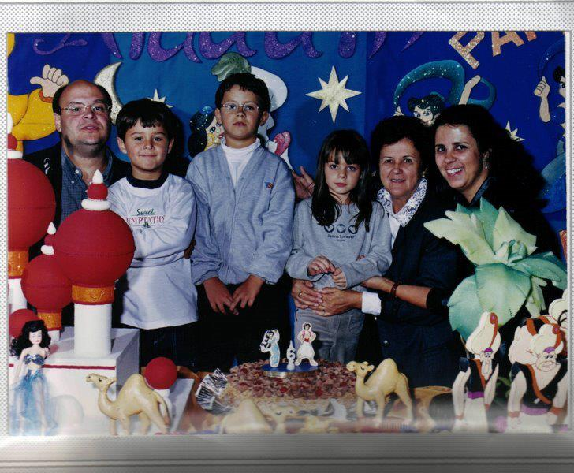

Nsacido em 1993, no Rio de Janeiro-RJ, me mudei para São paulo com 3 meses de idade. Vivo desde, então, nessa cidade que me presentou com ótimos momentos e boas amizades. Em 2015, me formei na faculdade de Egenharia Civil, e trabalhei nessa área por 6 anos. Motivado pelo exemplo do meu pai, que é um excelente profissional da área de TI, decide mudar de área e estou iniciando um novo caminho, de muitos desafios, mas que com certeza será de sucessos e de muitas realizações. .
| Curso | Tipo de Curso | Local do Curso | Ano de Conclusão |
|---|---|---|---|
| Engenharia Civil | Graduação | Universidade Presbiteriana Mackenzie | 2015 |
| Gerenciamento de Obras de Construção Civil | Especialização | Instituto Maua de Tecnologia | 2021 |
| BIM (Building Information Modellin) | Especialização | PUC Minas | 2022 |